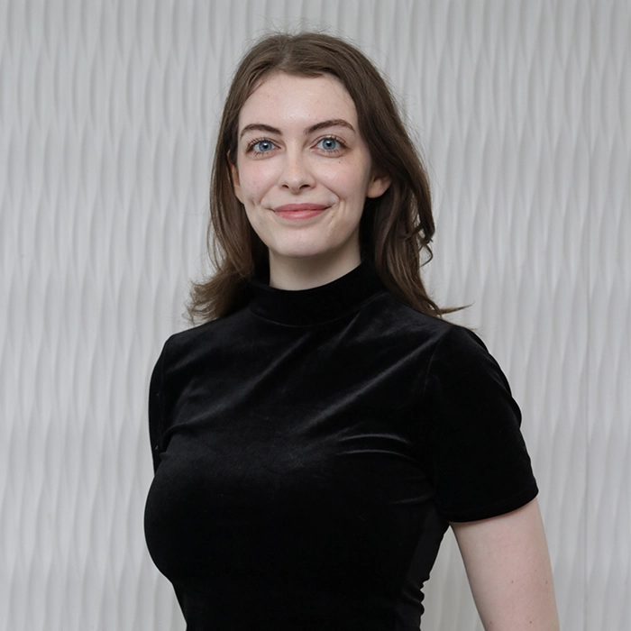

Mathilde Elie
Cité, 2026
Originaire de la ville de Québec, Mathilde Elie vit et travaille actuellement à Tiohtià:ke/Mooniyang/Montréal. Elle est titulaire d’un baccalauréat en études asiatiques de l’Université de Montréal. Après avoir travaillé au sein d’un organisme artistique montréalais soutenant des artistes médiatiques émergents d’origine asiatique, elle se tourne vers le milieu des arts technologiques en s’inscrivant au DESS en arts, création et technologies de l’Université de Montréal. Elle prévoit poursuivre sa formation dans le domaine à travers une maîtrise en muséologie de la Korea University à Séoul.
Mathilde Elie s’intéresse à l'espace architectural et à son influence sur le déplacement du corps des foules. Inspirée du concept de la marche comme pratique artistique encourageant une approche nouvelle du monde qui nous entoure, son travail interroge notre conception de l'environnement à travers une déformation de la perspective par le mouvement.

installation, tissu, projection vidéo
300 x 100 cm
Créées à partir de dessins au fusain, des formes géométriques rappelant un paysage architectural brutaliste sont projetées sur une surface de tissu à grande échelle, se mouvant à la manière d’un panorama déroulant. Le lent défilement des images invite le public à s’arrêter un moment pour contempler le paysage qui s’offre à lui. L’installation s'inscrit dans l’espace et s’y harmonise comme une structure à part entière.